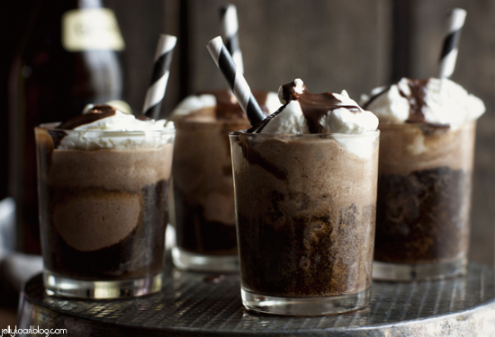
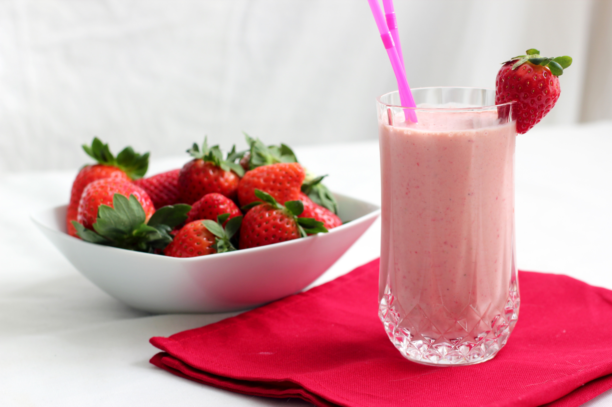
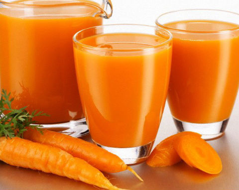
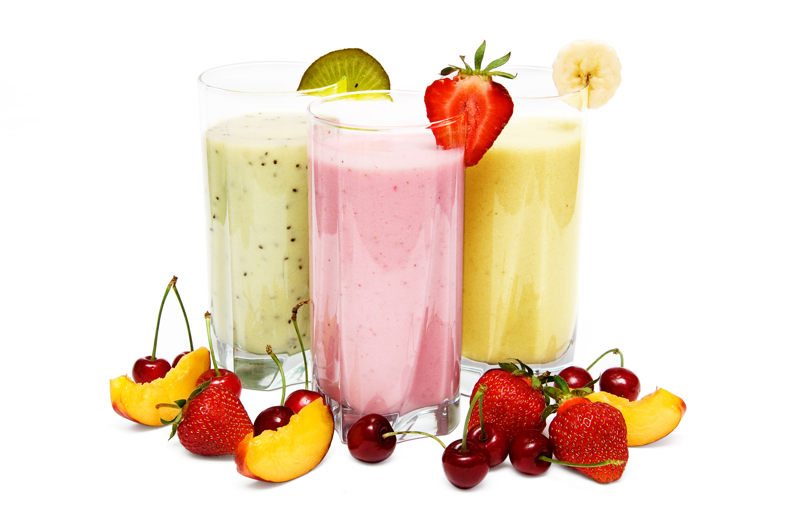

Beverages
-

Choco Float
Choco float or chocolate float is another sweet and refreshing beverage. This beverage is made of chocolate powder, sugar and cubed ice then topped with vanilla ice cream and sprinkles. Best to served during summer season.
Learn More» -

Strawberry Milkshake
Strawberry milkshake is one of the popular refreshing beverage. This beverage is made of strawberries, milk, yogurt or ice cream and cubed ice. This refreshing beverage is similar to other healthy shakes that are best to serve during summer season.
Learn More» -

Carrot Shake
Carrot shake or carrot milkshake is a healthy and refreshing beverage. This beverage is made of carrots, sugar and cubed ice. Some added powdered or evaporated milk for creamy consistency. This refreshing beverage is similar to other healthy shakes and best to serve during summer season.
Learn More» -

Mixed Fruit Shake
mixed fruit shake is another healthy and refreshing beverage consists of different fruits blended together with fresh milk and ice cubes. This refreshing beverage is similar to other healthy shakes and best to serve during summer season.
Learn More»
{kind=link}
{kind=link}
{kind=link}
{kind=link}